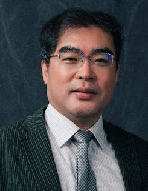
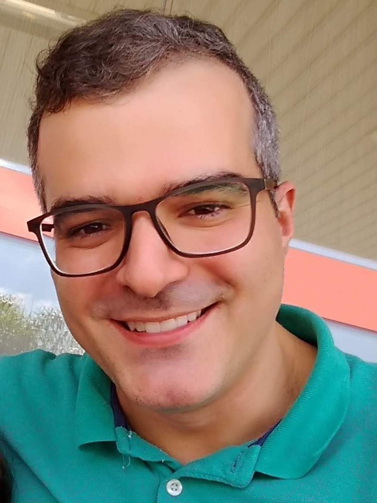

Distinguished Expert Panel
Management and Operational Challenges for the Roaring Twenties
The networking field continues to evolve rapidly. Network softwarization is in full swing, enterprise networking services are increasingly moving to the cloud, network automation and gaining operational insights are top-of-mind for network providers, new services demanding of stringent service-level guarantees are emerging, all happening while the number of interconnected entities, the volume of traffic, and the dependence of our society on networking services continue to grow unabatedly. We are indeed in a Golden Age of Networking. Of course, for all of this to continue will also require management technology to not only keep pace, but keep raising the bar to enable the seamless operation of all this - to roll out and deploy new services, avoid disruptions, protect against abuse, and improve networking economics. This raises the question of the implications on the network and service management field and what specific opportunities and challenges are ahead for this decade.
This panel will explore those challenges as well as the associated opportunities that are expected to arise within this still very young decade of the "Roaring Twenties". The panel will be structured along five questions, each exploring a distinctive aspect:
Q1: Programmability and programmable networking services and frameworks. What advances can be expected and/or will be needed to bring programmability of networks to the next level? Are new programming models needed? How can not only functionality but also line-rate performance be ensured? What other challenges arise, e.g. with regards to novel attack vectors?
Q2: AI and Machine Learning vs demands for encryption and privacy. Advances in Machine Learning and AI have been key for increased network automation and optimization. However, the same techniques that enable these advances can also compromise privacy and digital sovereignty of users. How will this tug-of-war play out, what advances can be reasonably expected to mitigate between these concerns?
Q3: New services needs and expectations from the end-users: for novel applications such as convergence of Operations Technology (Industry 4.0) with IT, Tactile Internet, holographic media, tele-robotics, there is surging interest in QoS and service levels that are not only ultra-low but also predictable. What are the management ramifications?
Q4: Ramification of new technologies and their interplay with management. Networking technology continues to evolve and efforts for Beyond 5G (B5G) and 6G or Future Internet Evolution are being explored. What new management challenges can be expected; in which ways can these technologies be shaped also by specific needs of management and offer the opportunity to bring about also advances in management?
Q5: Multidomain and trust issues. Many network services may move beyond the realm of a single domain, requiring collaboration between multiple network providers. Trust boundaries are a major issue here, as (for example) network providers may be hesitant to provide visibility into their network as might be required or to allow others exert control over traffic. This may also become increasingly a hurdle towards advances with regards to Q1-Q4. What advances will be needed in management technology to help overcome these concerns?
Panelists
- Ying-Dar Lin, National Yang Ming Chiao Tung University (NYCU), Taiwan
- Marie-Paule Odini, HPE Communication Technology Group, USA
- Burak Gorkemli, Argela, Turkey
- Klaus Raizer, Ericsson Research, Brazil

Ying-Dar Lin is a Chair Professor of computer science at National Yang Ming Chiao Tung University (NYCU), Taiwan. He received his Ph.D. in computer science from the University of California at Los Angeles (UCLA) in 1993. He was a visiting scholar at Cisco Systems in San Jose during 2007–2008, CEO at Telecom Technology Center, Taiwan, during 2010-2011, and Vice President of National Applied Research Labs (NARLabs), Taiwan, during 2017-2018. He cofounded L7 Networks Inc. in 2002, later acquired by D-Link Corp. He also founded and directed Network Benchmarking Lab (NBL) from 2002, which reviewed network products with real traffic and automated tools, also an approved test lab of the Open Networking Foundation (ONF), and spun off O'Prueba Inc. in 2018. His research interests include machine learning for cybersecurity, wireless communications, network softwarization, and mobile edge computing. His work on multi-hop cellular was the first along this line, and has been cited over 1000 times and standardized into IEEE 802.11s, IEEE 802.15.5, IEEE 802.16j, and 3GPP LTE-Advanced. He is an IEEE Fellow (class of 2013), IEEE Distinguished Lecturer (2014–2017), ONF Research Associate (2014-2018), and received K. T. Li Breakthrough Award in 2017 and Research Excellence Award in 2017 and 2020. He has served or is serving on the editorial boards of several IEEE journals and magazines, including Editor-in-Chief of IEEE Communications Surveys and Tutorials (COMST) with impact factor increased from 9.22 to 25.24 during his term in 2017-2020. He published a textbook, Computer Networks: An Open Source Approach, with Ren-Hung Hwang and Fred Baker (McGraw-Hill, 2011).
 Marie-Paule Odiniis Distinguished Technologist in HPE Communication Technology Group (CTG) focused on customer innovation and emerging trends in the communication industry including NFV, SDN, IoT, AI and 5G. She holds a worldwide position and drives technical discussions towards 5G with customers and inside HPE around strategy and roadmaps. She also leads CTG standard and opensource group, being personally active in many different forums including ETSI, GSMA, TMForum, NGMN, TIP, 5G Americas and ATIS. She held key positions such as ETSI NFV Vice Chair, IEEE SDN Chair, TIP E2E network slicing co-chair, 5G Americas and GSMA Telco Edge key contributor. Prior to HPE she worked in France Telecom/Orange labs in charge of Value-Added Services for Corporate Enterprise. She holds a Master Degree in EE from Utah State University. She is also teaching a telecommunication course for university students.
Marie-Paule Odiniis Distinguished Technologist in HPE Communication Technology Group (CTG) focused on customer innovation and emerging trends in the communication industry including NFV, SDN, IoT, AI and 5G. She holds a worldwide position and drives technical discussions towards 5G with customers and inside HPE around strategy and roadmaps. She also leads CTG standard and opensource group, being personally active in many different forums including ETSI, GSMA, TMForum, NGMN, TIP, 5G Americas and ATIS. She held key positions such as ETSI NFV Vice Chair, IEEE SDN Chair, TIP E2E network slicing co-chair, 5G Americas and GSMA Telco Edge key contributor. Prior to HPE she worked in France Telecom/Orange labs in charge of Value-Added Services for Corporate Enterprise. She holds a Master Degree in EE from Utah State University. She is also teaching a telecommunication course for university students.
Marie-Paule is also very concerned with climate change and environmental impact, participating actively to HPE Living Progress program and other personal engagements.
 Burak Gorkemli is the Product and Innovation Director in Argela, where he works for the disaggregation and virtualization of the fixed broadband access network, leads the reference design activities in the Open Networking Foundation (ONF) and participates in standardization communities like the Broadband Forum (BBF). He has been in the telecommunication industry for 25 years, where he designed/developed solutions for SS7, GSM and IP networks, managed R&D projects, coordinated patent applications and supervised university collaborations. Dr. Gorkemli holds 11 patents on SDN, NFV, IP and telecommunication technologies. He obtained the PhD degree from Koc University, Turkey in 2010. Dr. Burak Gorkemli authors several recent papers on management of softwarized networks.
Burak Gorkemli is the Product and Innovation Director in Argela, where he works for the disaggregation and virtualization of the fixed broadband access network, leads the reference design activities in the Open Networking Foundation (ONF) and participates in standardization communities like the Broadband Forum (BBF). He has been in the telecommunication industry for 25 years, where he designed/developed solutions for SS7, GSM and IP networks, managed R&D projects, coordinated patent applications and supervised university collaborations. Dr. Gorkemli holds 11 patents on SDN, NFV, IP and telecommunication technologies. He obtained the PhD degree from Koc University, Turkey in 2010. Dr. Burak Gorkemli authors several recent papers on management of softwarized networks.

Klaus Raizer is the manager for the Zero-touch network automation Ericsson Research program, which is one of Ericsson’s 6 main global research programs and aims at extending the state of the art of network automation. It counts with hundreds of members from different research areas and with collaborations with business units within Ericsson and with several Universities. He received the B.S degree in control and automation engineering from the University of Campinas, Brazil, in 2009, an M.S. degree in computational mechanics in 2010, and his Ph.D. degree in electrical and computer engineering in 2015, in the topic of Computational Intelligence and Artificial Cognition. From 2014 to 2015, he was a researcher at the CPqD Research and Development Center in Telecommunications with the innovation department. He is an AI researcher at Ericsson since 2015, and his research interests include network automation and intelligent networks, cognitive robotics, artificial intelligence, computer simulations and cyber-physical systems.
Moderators / Organisers
- Alexander Clemm, Futurewei, USA
- Filip De Turck, Ghent University, Belgium
Dr. Alexander Clemm (alex@futurewei.com) is a Distinguished Engineer at Futurewei’s Future Networks and Innovation Group in Santa Clara, California. He has been involved in networking software and management technology throughout his career, most recently in the areas of high-precision networks and future networking services as well as network analytics, intent-based networking, service assurance, and telemetry. Alex has 50+ publications, 50+ issued patents, 12 RFCs, and several books (including "Network Management Fundamentals"), and has been serving on the OC and TPC of highly-regarded management and network softwarization conferences for many years, including IEEE IM/NOMS, CNSM, and NetSoft. He holds an M.S. degree in computer science from Stanford University and a Ph.D. from the University of Munich, Germany.
Prof. Filip De Turck is a Full Professor at the Department of Information Technology (Intec) of Ghent University with expertise in communication software, network resource management, adaptive service delivery and efficient large scale data processing. He is currently (co-)author of over 700 publications.
He serves in the Editorial Board of several network and service management journals, and is Editor-in-Chief of IEEE Transactions on Network and Service Management (TNSM), and steering committee member of the IEEE/IFIP Network Operations and Management Symposium (NOMS), the IFIP/IEEE Integrated Network Management (IM) Symposium, the IEEE Conference on Network Softwarization (IEEE NetSoft) and the IFIP/IEEE Conference on Network and Service Management (CNSM). He also served as chair of the IEEE SDN Initiative Conference Committee, which coordinates initiative IEEE events and conferences on Softwarized Networks. He received the IEEE ComSoc Dan Stokesberry Award 2021 for particularly distinguished technical contributions to the growth of the network operations and service management field.